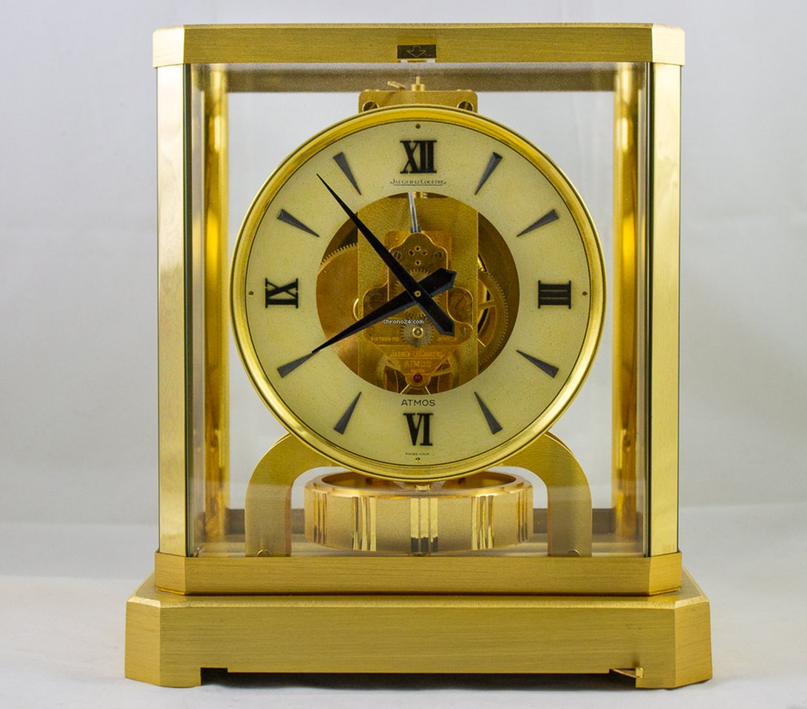
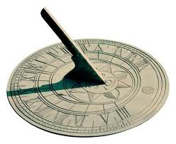
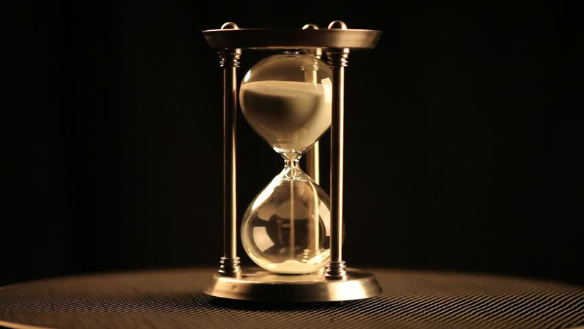
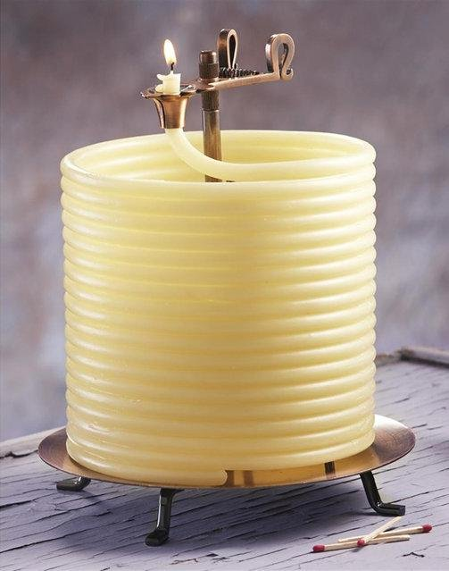
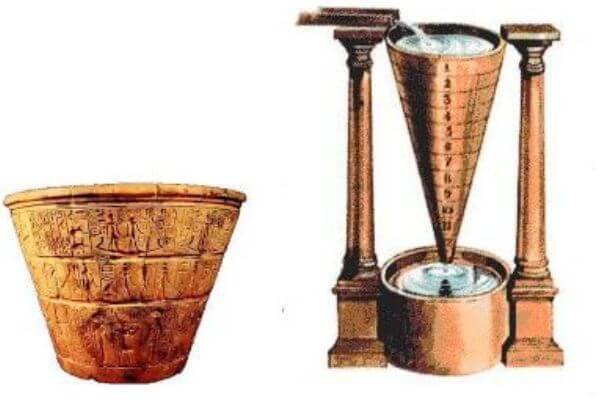

RELOJES DESTACADOS
| NOMBRE | DESCRIPCION | IMAGEN |
|---|
| RELOJES ATMOS |
Es el nombre comercial de un reloj mecánico manufacturado por Jaeger-LeCoultre en Suiza
cuya particularidad reside en que no necesita que le den cuerda para funcionar, pues toma la
energía de los cambios de temperatura y presión atmosférica ambientales. Puede funcionar durante
años sin intervención humana. Fuente :https://sites.google.com/site/relojesmundos/tipos-de-reloj |
 |
|---|
| RELOJES DE SOL |
Es un instrumento usado desde tiempos muy remotos con el fin de medir el paso de las horas,
minutos y segundos (tiempo). En castellano se le denomina también cómo cuadrante solar.
Emplea la sombra arrojada por un gnomon o estilo sobre una superficie con una escala para indicar
la posición del Sol en el movimiento diurno. Fuente :https://sites.google.com/site/relojesmundos/tipos-de-reloj |
 |
| RELOJES DE ARENA |
Es un instrumento mecánico que sirve para medir un determinado transcurso de tiempo,
desde el momento en que la arena comienza a caer del receptáculo o bulbo superior al inferior,
hasta que termina de hacerlo, y sólo requiere de la energía potencial de la gravedad para
su funcionamiento. Fuente :https://sites.google.com/site/relojesmundos/tipos-de-reloj |
 |
| RELOJES DE VELA |
Es una especie de dispositivo empleado para medir el tiempo que se fundamenta en el uso regular del
combustible,generalmente cera que hacen las velas encendidas. En la antigüedad eran muy empleadas en los
conventos y monasterios europeos para poder hacer las vigilias (Horas canónicas).Se sabe que en la Dinastía Song
en China (960–1279) se empleaban bloques de velas para medir el tiempo con ellas.Cuando la gente creía
que aportaban prosperidad y amor al pueblo. Fuente :https://sites.google.com/site/relojesmundos/tipos-de-reloj |
 |
| RELOJES DE AGUA O CLEPSIDRA |
Es cualquier mecanismo para medir el tiempo mediante el flujo regulado de un líquido hacia o desde
un recipiente graduado, dando así dos tipos diferentes de relojes según la dirección del flujo.
Las clepsidras datan de la antigüedad egipcia y se usaban especialmente durante la noche, cuando los relojes
de sol perdían su utilidad. Los primeros relojes de agua consistieron en una vasija de cerámica que contenía
agua hasta cierto nivel, con un orificio en la base de un tamaño adecuado para asegurar la salida del
líquido a una velocidad determinada y, por lo tanto, en un tiempo prefijado.
Fuente :https://sites.google.com/site/relojesmundos/tipos-de-reloj |
 |